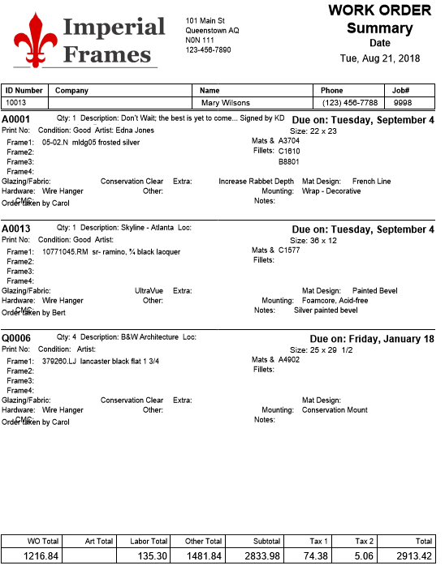
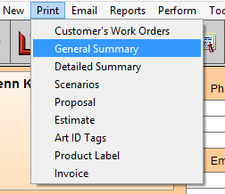
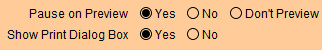
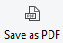

Print General Summary
Give this document to a customer as a record of the items left in your care and how they are to be framed.
-
This document prints up to four Work Orders per page.
-
It prints a limited number of components, such as, 4 frames, 4 mats, 4 fillets, 1 mat design, 1 hardware, 1 extra, 1 glass, 1 fitting.
Printed Example

How to Print a General Summary for Work Orders
Note: The General Summary can also be printed when posting a Work Order(s) to an Invoice.
-
Go to the specific Work Order you need to print.
-
Click the Print Documents sidebar button.

-
The Print Documents window appears.

-
Choose General Summary.
-
A print preview of the document appears.
-
Click Save as PDF or Continue to print.
OR
-
Go to the specific Work Order you need to print.
-
In the menu bar, click Print and select General Summary.

-
A print preview of the document appears.
-
Click Save as PDF or Continue to print.
Send a General Summary for Work Orders
Send this document to a customer as a record of what items they have left in your care and how they are to be framed.
-
This report lists up to four Work Orders per page.
-
It shows a limited number of components, such as, 4 frames, 4 mats, 4 fillets, 1 mat design, 1 hardware, 1 extra, 1 glass, 1 fitting.
How to Save as PDF that can later be emailed
-
Go to the specific Work Order you need to print.
-
Click Print Documents sidebar button.
-
The Print Documents window appears.
-
Be sure that the print settings (bottom) fields for Pause On Preview and Show Print Dialog Box are both are set to Yes.

-
Click the General Summary button.
-
A print preview of the document appears.
-
Click the Save as PDF button.

The Save Records as PDF dialog box appears. -
In the File name field type the name you wish to use for this document.
Tip: Use the Work Order number or the customer’s name.
-
At the top of the window, in the Save In field, select the location where you would like to save the document.
-
Click Save.
The print preview window reappears. -
Click Continue.
The print dialog window appears. -
Click Cancel.
The print preview and print dialog windows close.
© 2023 Adatasol, Inc.